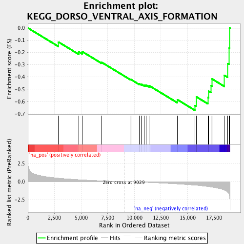

| | | Dataset | EDIC_lymphocite |
| Phenotype | NoPhenotypeAvailable |
| Upregulated in class | na_neg |
| GeneSet | KEGG_DORSO_VENTRAL_AXIS_FORMATION |
| Enrichment Score (ES) | -0.67175764 |
| Normalized Enrichment Score (NES) | -1.9833567 |
| Nominal p-value | 0.0 |
| FDR q-value | 0.02976956 |
| FWER p-Value | 0.156 |
Table: GSEA Results Summary

Fig 1: Enrichment plot: KEGG_DORSO_VENTRAL_AXIS_FORMATION
Profile of the Running ES Score & Positions of GeneSet Members on the Rank Ordered List
| PROBE | GENE SYMBOL | GENE_TITLE | RANK IN GENE LIST | RANK METRIC SCORE | RUNNING ES | CORE ENRICHMENT | | 1 | MAPK3 | | | 2870 | 0.478 | -0.1145 | No |
| 2 | SOS1 | | | 4797 | 0.269 | -0.1953 | No |
| 3 | NOTCH3 | | | 5112 | 0.242 | -0.1933 | No |
| 4 | NOTCH1 | | | 6931 | 0.115 | -0.2803 | No |
| 5 | FMN2 | | | 9608 | -0.028 | -0.4192 | No |
| 6 | KRAS | | | 9687 | -0.032 | -0.4208 | No |
| 7 | PIWIL3 | | | 10450 | -0.076 | -0.4551 | No |
| 8 | PIWIL2 | | | 10642 | -0.088 | -0.4584 | No |
| 9 | ETS1 | | | 10953 | -0.106 | -0.4666 | No |
| 10 | MAPK1 | | | 11108 | -0.115 | -0.4659 | No |
| 11 | SOS2 | | | 11411 | -0.133 | -0.4716 | No |
| 12 | PIWIL1 | | | 14057 | -0.332 | -0.5855 | No |
| 13 | ETV6 | | | 15694 | -0.497 | -0.6336 | Yes |
| 14 | SPIRE2 | | | 15817 | -0.511 | -0.6007 | Yes |
| 15 | ETV7 | | | 15838 | -0.514 | -0.5623 | Yes |
| 16 | EGFR | | | 16917 | -0.686 | -0.5663 | Yes |
| 17 | GRB2 | | | 16987 | -0.703 | -0.5159 | Yes |
| 18 | NOTCH2 | | | 17202 | -0.747 | -0.4698 | Yes |
| 19 | CPEB1 | | | 17296 | -0.769 | -0.4156 | Yes |
| 20 | MAP2K1 | | | 18460 | -1.176 | -0.3865 | Yes |
| 21 | PIWIL4 | | | 18782 | -1.469 | -0.2905 | Yes |
| 22 | SPIRE1 | | | 18895 | -1.734 | -0.1631 | Yes |
| 23 | ETS2 | | | 18964 | -2.188 | 0.0015 | Yes |
Table: GSEA details [plain text format]
Fig 2: KEGG_DORSO_VENTRAL_AXIS_FORMATION: Random ES distribution
Gene set null distribution of ES for KEGG_DORSO_VENTRAL_AXIS_FORMATION